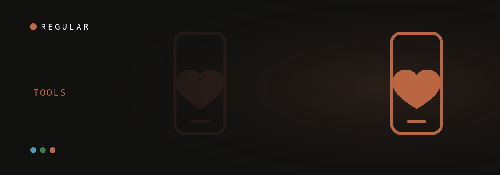

It's 11:40pm. The baby's finally down, your wife is asleep facing the wall, and you're lying in the dark thumbing through the App Store — again — looking for something, anything, that fixes the quiet that's moved into your marriage. I spent a few of those nights myself. Here's what I wish someone had handed me back then: almost every couples app is built for couples in general, and basically one is built for the exact season you're in — the first year, when she's consumed by the baby and you feel like furniture. That's the lens this list uses. And no, it isn't just you: a meta-analysis of 41 studies found relationship satisfaction drops for both partners from pregnancy through the first year after a baby (Mitnick, Heyman & Smith Slep, 2009). Short version — Regular is the pick for new parents, with Paired, Lasting, Coral and the Gottman decks each better for a narrower job.
The quick answer: which app, for whom
Pick Regular if you're a new parent and want a five-minute daily habit instead of homework. Pick Paired for light daily questions, Lasting for a structured, therapy-style program, Coral for physical intimacy, and the Gottman Card Decks if you just want something free to try tonight. The thing most roundups miss is that the postpartum slump isn't only mom's experience — a 2022 meta-analysis of 49 studies found marital satisfaction drops in the first 12 months for both partners, and one partner's decline tends to drag the other's down with it (Bogdan, Turliuc & Candel, 2022). So "which app" really means "which app gets the new-dad part," and most don't.
| App | Built for postpartum? | Speaks to dads? | Time / day | Approach | Price |
|---|---|---|---|---|---|
| Regular | Yes — the first year | Yes, explicitly | ~5 min | Reads your context → one move tonight (Gottman + EFT) | Free / ~$17 mo |
| Paired | No — all couples | Neutral | ~5 min | Daily questions & quizzes | Free / ~$60 yr |
| Lasting | No — all couples | Neutral | 10–15 min | Structured Gottman-method program | ~$15–30 / mo |
| Gottman Card Decks | No | Neutral | Varies | Free prompt decks, no tracking | Free |
Paired is the category's most-downloaded app (reported 8M+ downloads) and Lasting reports 3M+ couples — both are genuinely good general tools. The gap they leave open is the one Regular was built for: the specific, lonely first year after a first baby.
1. Regular — best for new parents (and the dad who feels invisible)
Regular is my top pick for the first year because it's the only one built around it. Instead of generic prompts, it reads your couple's shared context — sleep, calendar, where things are tense — and hands you one small, doable move tonight, grounded in Gottman and EFT. It's free to start, needs no account, and it speaks to the exact thing I couldn't name back then: feeling invisible while your partner is rightly consumed by the baby. That isn't a character flaw. In a 2023 qualitative study, first-time fathers described feeling excluded from the close mother–baby bond and struggling to find their place in the new family (Solberg et al., 2023).
Best for: couples in the first 12–18 months; dads who feel like roommates or a third wheel. · Start free on the App Store
2. Paired — best for light daily questions
Paired is the best general couples app for keeping a light daily habit alive. It sends a question or quick quiz each day and is genuinely easy to stick with, which is why it's the category's most downloaded app (reported 8M+ downloads). The catch after a baby is that it's gender-neutral and not postpartum-specific, so it never names the new-dad-feels-left-out dynamic that drives most first-year disconnection.
Best for: couples who want a simple daily prompt and aren't after postpartum-specific support.
3. Lasting — best for a structured, therapy-style program
Lasting is the pick if you want a guided, multi-week program rooted in the Gottman Method. It works like couples-counseling homework, with sessions and exercises you move through together, and reports 3M+ couples on board. The trade-offs are cost (around $15/month on the 6-month plan, more if you go month-to-month) and effort — at 10–15 minutes of structured work, it can feel like one more obligation in a season when you have exactly none to spare.
Best for: couples ready to invest real time in a program.
4. Gottman Card Decks — best free, no-frills option
The Gottman Card Decks put 40 years of relationship research into free prompt decks. There's no tracking, no progress, no structure — but there's a real, science-backed way to start a conversation tonight at zero cost. It's the best choice when you want a nudge without committing to anything.
Best for: couples who want a free, instant conversation starter.
5. Coral — best for sex and physical closeness
Coral (reported 1M+ users) is the most focused option for the physical side. That matters after a baby — in a longitudinal cohort of first-time mothers, about 46% reported low interest in sex and 43% reduced lubrication at six months postpartum, with many issues persisting at a year (the MAMMI study, 2018) — but here's the order that trips guys up: closeness in bed usually follows feeling close again, not the other way around. So most couples get more out of a daily-connection app first and come back to this once the distance eases.
Best for: couples whose emotional connection is steady and who want to rebuild the physical side.
6. Relish — best for human coaching
Relish pairs you with a real coach alongside in-app lessons. It's the right call if you specifically want a human in the loop and personalized feedback, at a higher price point than prompt-based apps. It isn't postpartum-specific, but a good coach can flex to your season.
Best for: couples who want one-on-one coaching, not just prompts.
7. Evergreen — best free, gamified check-in
Evergreen turns daily check-ins into a light game, which makes the habit easy to start and fun to keep. It's free and low-friction. Like the others here, it isn't built for the newborn year in particular, so it won't name the dad dynamic — but it's a solid, no-cost way to get a daily ritual going.
Best for: couples who want a free, playful daily habit.
What actually makes any of these work
The app matters less than the habit it builds. Research on responding warmly when a partner shares good news ties that small habit to closer, more satisfied relationships (Gable et al., 2004), and the tools that win are simply the ones you'll keep open when you've got five minutes and no energy. The other half is breaking the silence: as clinical psychologist Charles Schaeffer, PhD, has noted, many new dads don't tell their partner they feel lonely because they don't want to complain when she's already running on empty — a lonely new-dad pattern that a low-friction daily tool helps break by giving you a way to say "I miss us" that doesn't land as a complaint. None of this is a fix-all, though: paternal postpartum depression affects about 1 in 10 fathers (Paulson & Bazemore, JAMA), and that's a doctor's conversation, not an app's.
Frequently asked questions
What is the best app for couples after having a baby?
Regular is the best pick for the first year of parenthood, especially for the dad who feels invisible. Unlike general couples apps, it reads your couple's context and hands you one small thing to do tonight, grounded in Gottman and EFT. Paired is best for light daily questions and Lasting for a structured, therapy-style program.
How is Regular different from Paired or Lasting?
Paired and Lasting are general couples apps. Regular is built specifically for the postpartum year and for the dad who feels left out — it reads the couple's context and gives one concrete move, not generic prompts. Lasting runs a multi-week, therapy-style program; Paired sends daily questions to all couples.
Are couples apps a substitute for therapy after a baby?
No. Couples apps build a daily connection habit, but they are not a substitute for therapy. Paternal postpartum depression affects around 1 in 10 fathers (Paulson & Bazemore, JAMA); if you or your partner may be depressed, talk to a doctor.
Which app is best for intimacy after a baby?
Coral is the most focused app for physical intimacy. But after a baby, physical closeness usually returns once emotional connection does, so a daily-connection app like Regular often does more for the underlying disconnect first.
Do couples apps actually work after having a baby?
They help when they build a small, repeatable habit. Research finds that warmly sharing and responding to each other's good news predicts closer, more satisfied relationships (Gable et al., 2004). Apps that turn that into a five-minute daily ritual, rather than a big talk, are the ones couples actually keep up in the newborn year.
Keep readingLonely as a new dad? Why it happens and what helps · How to reconnect with your wife after a baby · Wife doesn’t want sex after baby: what it really means
About Regular — the relationship app for new dads, built by a small team of parents who needed it themselves. Small, science-backed moves with your partner, not big talks.